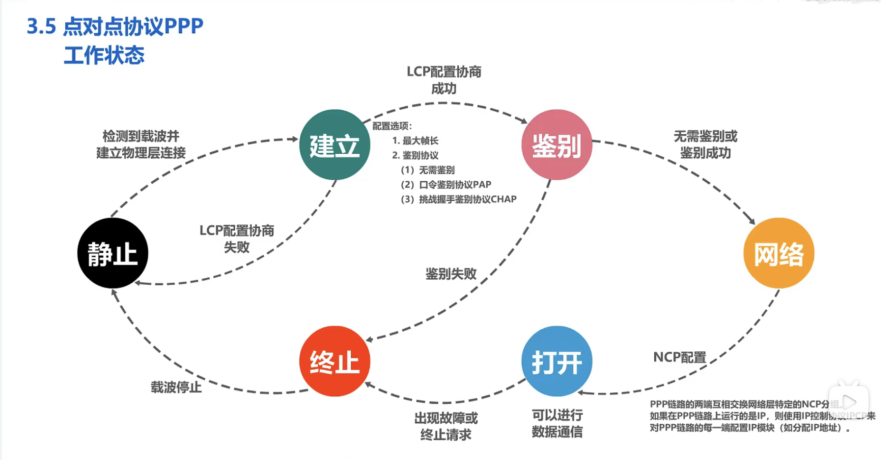

计算机网络杂记-04
点对点协议PPP Point-to-Point Protocol
PPP是一种数据链路层协议，它规定了点对点通信的协议标准。
PPP 为在点对点通信链路上传输网络层数据报提供了一种标准方法。
- PPP 为多种网络层协议提供了一种通用的封装方法。（封装成帧）
- PPP 为在两数据链路层提供了
链路控制协议LCP，用于建立、配置和测试数据链路连接。 - PPP 为在两数据链路层提供了
网络控制协议NCP，用于在两个节点之间传输网络层协议的数据包。
帧格式
1 | 帧的首部 | 数据 | 帧的尾部 |
标志 Flag 字段 F：标志字段是一个字节，它的值为 0x7E，表示帧的开始和结束。地址 Address 字段 A：地址字段是一个字节，它的值为 0xFF，表示广播地址。预留，但目前没有使用。控制 Control 字段 C：控制字段是一个字节，它的值为 0x03，表示无控制信息。预留，但目前没有使用。协议 Protocol 字段 P：协议字段是两个字节，指明上层协议类型。如 0x0021 表示 IP 协议、0xC021 表示 LCP 协议、0x8021 表示 IPX 协议、0x8023 表示 IPX 协议。数据 Data 字段：数据字段是 0~1500 个字节，表示上层协议的数据。帧检验序列 FCS 字段：帧检验序列字段是两个字节，用于差错检测。
透明传输
如果在帧的数据部分出现了和帧首部相同的字符，数据链路层就会误认为帧结束，因此，数据链路层必须对数据进行处理，以免出现这种情况。
数据链路层对数据进行处理的方法是：在数据中出现特定字符时，数据链路层自动在该字符前面插入一个转义字符，以免与帧的定界符混淆。
发送方的处理：
出现的每一个 0x7E 字符，都用 0x7D 0x5E 代替。
出现的每一个 0x7D 字符，都用 0x7D 0x5D 代替。
出现每一个 ASCII 码小于 0x20 的字符，都用 0x7D 加上该字符的 ASCII 码的值加上 0x20 代替。
接收方的处理：只需要将 0x7D 0x5E 转换为 0x7E，将 0x7D 0x5D 转换为 0x7D，将 0x7D 加上 0x20 的值转换为原来的字符即可。
面向比特的同步链路采用插入比特0的比特填充方法
对发送方的处理:
在数据中出现 5 个连续的 1 时，就在后面插入一个 0。
对接收方的处理:
在接收到 5 个连续的 1 时，就删除后面的 0。
差错侦测
在FCS字段中使用CRC-CCITT差错检测码。
CRC-CCITT生成多项式为：$x{16}+x{12}+x^5+1$
参考：RFC 1662
接收方在接收到帧后，对帧进行差错检测，如果发现差错，则丢弃该帧。
PPP 的工作状态

媒体接入控制
由于多路访问信道是由多个节点共享的，因此，必须对多路访问信道进行管理，以便在多个节点同时发送数据时，不会发生冲突。
这时，就需要使用媒体接入控制（MAC Media Access Control）子层。
媒体接入控制分为两种类型：
静态媒体接入控制
- 频分多址
- 时分多址
- 码分多址
动态媒体接入控制
- 受控接入
- 集中控制
- 分布控制
- 受控接入
随机接入
预先固定分配好信道的使用权，这类方法非常不灵活，对于突发性的数据传输，效率很低。通常在无线网络物理层使用。
在动态接入控制中的集中控制，有一个主站以循环的方式向各个节点询问是否有数据要发送，如果有，则允许发送，否则，就询问下一个节点。缺点是主站成为了系统的瓶颈，如果主站出现故障，整个系统就无法工作。
而分布控制则是将主站的功能分散到各个节点，各个节点之间通过协商的方式来决定谁有权利发送数据。这种方法的缺点是，如果各个节点之间的协商出现问题，就会导致系统无法工作。
以上两种方式现在竞争中被淘汰了。
随机接入是一种分布式的媒体接入控制方法，它不需要主站，各个节点之间也不需要协商，而是通过一定的算法来决定谁有权利发送数据。
静态划分信道
信道复用
复用 Multiplexing：将多个信号合成一个信号的过程。
分用 Demultiplexing：将复用后的信号分解成多个信号的过程。
当网络传输媒体的带宽有限时，就需要对带宽进行复用，以便多个用户共享带宽。
常见复用技术
频分复用 FDM Frequency Division Multiplexing
时分复用 TDM Time Division Multiplexing
波分复用 WDM Wave Division Multiplexing
码分复用 CDM Code Division Multiplexing
码片 Chip：在 CDMA 中，每一个比特时间被分为多个小的时间间隔，每一个小的时间间隔称为一个码片，每一个码片都有一个唯一的码片序列，每一个用户都有一个唯一的码片序列，用户的数据就是通过这个码片序列来进行传输的。
使用 CDMA 时，每一个用户都有一个唯一的码片序列，这样，即使多个用户同时发送数据，也不会发生冲突。这个叫 m bit 的码片序列（Chip Sequence）。
一个站如果发送比特1，则发送它自己的 m 个码片序列。
一个站如果发送比特0，则发送它自己的 m 个码片序列的二进制反码。
上面这种通讯方式叫做直接序列扩频通讯（DS-CDMA Direct Sequence Code Division Multiple Access）。
码片的挑选规则：
分配给每个用户的码片序列必须是正交的。（规格化内积为0）
分配给每个用户的码片序列必须各不相同。